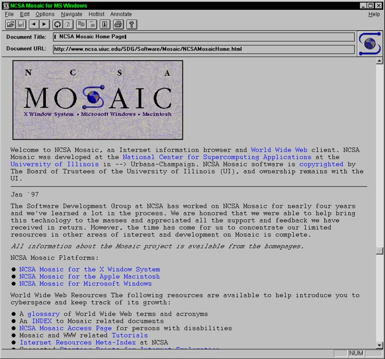

The birth of the World Wide Web
HTML was created by Tim Berners-Lee at CERN around 1990-1991 to share linked scientific documents on the emerging World Wide Web. It was based on SGML and defined a small set of structural and inline tags for headings, paragraphs, lists, and hyperlinks.
At this stage there was no official standard; HTML existed as informal documentation and code in the first browsers and servers. The focus was on simple hypertext documents, not layout or visual design. There was no way to change fonts, add colors, or control page layout. The browser decided how everything looked.
This was not a limitation that bothered early users. The web was designed for physicists sharing research papers. Visual design was not the point. Linking documents across machines was the revolutionary idea.
Every website that exists today descends from this handful of tags. The entire web economy, every social network, every online store, traces back to a few elements invented to share physics papers at a Swiss research lab. The simplicity of early HTML is what allowed the web to spread so fast: anyone could view source, understand the markup, and create their own page.
Title: World Wide Web
Year: 1991
Creator: Tim Berners-Lee at CERN
The first website ever created ran on a NeXT computer at CERN. It explained what the World Wide Web was, how to create web pages, and how to search for information. The page used only basic HTML: headings, paragraphs, and hyperlinks. No images. No colors. No layout.
The original URL was http://info.cern.ch/hypertext/WWW/TheProject.html.
CERN restored this page in 2013 so it can still be visited today.
What the HTML looked like:
<h1>World Wide Web</h1> <p>The WorldWideWeb (W3) is a wide-area hypermedia information retrieval initiative aiming to give universal access to a large universe of documents.</p> <p>Everything there is online about W3 is linked directly or indirectly to this document, including an <a href="Summary.html">executive summary</a> of the project.</p>
Why it mattered: This page proved that a simple markup language could connect documents across the internet. There was no special software to buy, no proprietary format to learn. Anyone with a text editor and a server could participate.
Title: NCSA Mosaic
Year: 1993
Creator: Marc Andreessen and Eric Bina at NCSA
Mosaic was not the first web browser, but it was the first to display images inline with text. Before Mosaic, images opened in separate windows. Mosaic made the web visual and accessible to non-technical users.
Mosaic ran on Unix, Windows, and Macintosh, which meant almost anyone with a computer could browse the web. The team that built Mosaic later founded Netscape Communications, which launched the browser wars.
Why it mattered: Mosaic turned the web from a text-based
research tool into something ordinary people wanted to use. The
img tag that Mosaic popularized is still in use today.

a element and the href attribute to connect documents across machines.h1-h6, paragraphs p, and lists ul, ol, li for basic document structure.